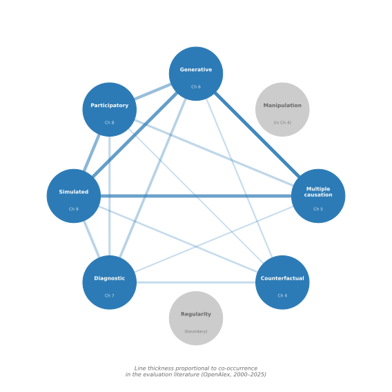

3 The Eight Logics of Causal Inference
Chapter 2 established that small n constrains what can be detected statistically but does not alter whether a causal relationship exists. It traced a line from Aristotle’s realism through Hume’s scepticism to Bhaskar’s recovery of causal powers as real features of the world. This chapter extends that story into the modern formalisms that evaluators actually use, and then identifies distinct logics through which causal claims can be warranted when n is small. These logics are the organising spine of the book: every method presented in Part II is an operationalisation of one or more of them.
Four traditions of causal reasoning shape how evaluators think about cause and effect, and each privileges a different form of evidence. Mill (1843) proposed eliminative canons (including the methods of agreement, difference, residues, and concomitant variation) through which an investigator compares cases systematically to isolate the factor that makes the difference. Mill’s logic requires no statistical apparatus; it operates through structured comparison across as few as two cases. Mackie (1965) introduced the INUS condition: a cause is an insufficient but necessary part of an unnecessary but sufficient condition. This formulation recognised that most real-world outcomes arise from conjunctions of factors rather than single causes. A development programme may be necessary within a particular causal package (alongside political will, institutional capacity, and adequate funding) without being sufficient on its own. Rubin (1974) extended and formalised the potential outcomes framework, originally proposed by Neyman (1990) for randomised experiments, to observational settings. In this framework, the effect of a treatment on a unit is the difference between the outcome under treatment and the outcome under control, only one of which is ever observed. The Rubin framework gives precise meaning to “the counterfactual” but requires either randomisation or strong assumptions to estimate the missing potential outcome across units. Pearl (2009) recast causation in terms of structural equations and directed acyclic graphs (DAGs), defining a causal effect as the consequence of an intervention (the do-operator) on a variable within a specified graph. Pearl’s framework provides a formal language for identifying what must be conditioned on to estimate causal effects, but the identification strategies it formalises (the back-door and front-door criteria, and graphical conditions for valid instrumental variable estimation) generally require large samples.
These four traditions do not compete; they answer different questions. Table 3.1 compares them on four dimensions that matter for evaluation practice.
| Tradition | Definition of “cause” | Role of mechanism | Formalism | Small-n applicability |
|---|---|---|---|---|
| Mill (1843) | The factor whose presence or absence makes the difference | Implicit in case comparison | Canons of induction | Directly applicable; designed for few cases |
| Mackie (1965) | INUS condition within a causal package | Packages of jointly sufficient conditions | Set-theoretic logic | Directly applicable; QCA operationalises this |
| Rubin (1974) | Difference in potential outcomes (Neyman 1923; Rubin 1974) | Not required for identification | Potential outcomes notation | Difficult at small n without randomisation |
| Pearl (2009) | Invariance under do-intervention on a DAG | Encoded in directed edges | Structural causal models | DAGs valuable as representation tool; estimation requires large n |
The mapping from traditions to evaluation methods is not one-to-one. Mill’s eliminative logic appears in qualitative comparative analysis. Mackie’s INUS conditions underpin both QCA and coincidence analysis. Rubin’s potential outcomes framework grounds single-case experimental designs, where the unit serves as its own control across phases. Pearl’s DAGs serve a cross-cutting role: regardless of which causal logic an evaluator invokes, a DAG can make the assumed causal structure explicit, clarify which confounders are assumed absent, and identify which variables need to be observed. This representational function is distinct from Pearl’s estimation strategies and remains valuable at any sample size. The decision framework in Chapter 10 revisits this cross-cutting role.
The different logics arise from recognising that these four traditions, together with subsequent developments in evaluation theory, generate eight distinguishable ways of warranting a causal claim. Each logic relies on a different type of evidence, asks a different canonical question, and maps onto a different family of evaluation methods. Table 3.2 presents the full architecture.
| Logic | Core justification | Canonical question | Part II chapter |
|---|---|---|---|
| 1. Regularity | Consistent association across observations | Does X co-occur reliably with Y? | Brief treatment below |
| 2. Counterfactual | Difference from what would have happened without X | What would the outcome have been without the intervention? | Chapter 4 |
| 3. Multiple causation | Sufficient conjunctions of conditions (INUS) | Which combinations of conditions produce Y? | Chapter 5 |
| 4. Manipulation | Active intervention produces observed change | Did doing X generate Y? | Brief treatment below |
| 5. Generative | Mechanism connecting X to Y in a specific context | How and why does X produce Y here? | Chapter 6 |
| 6. Participatory | Stakeholder knowledge validates the causal claim | Do those involved confirm that X caused Y? | Chapter 8 |
| 7. Simulated | Computational reproduction of the outcome from causal rules | Can we reproduce Y from X-rules in a model? | Chapter 9 |
| 8. Diagnostic | Bayesian updating of causal confidence after observing evidence | How much does this evidence shift the probability that X caused Y? | Chapter 7 |
3.1 Why multiple logics?
The most common objection to a multi-logic framework is that the counterfactual logic is the gold standard and other logics represent weaker alternatives to be used only when counterfactual designs are infeasible (Deaton & Cartwright, 2018). This view conflates one tradition’s definition of causation with causation itself. The counterfactual logic asks “what would have happened without the intervention?”, a precise and valuable question, but not the only question that matters for evaluation. It does not ask how the intervention produced its effects, whether the same combination of conditions would produce the effect elsewhere, or why the intervention worked in one site but not another. These are distinct causal questions, not inferior versions of the counterfactual question, and they require distinct logics to answer.
Cartwright (2007) argued that different methods of causal inference do not merely offer alternative routes to the same causal conclusion; they capture different causal concepts (causes as difference-makers, causes as capacities, causes as INUS conditions) and the appropriate method depends on which causal question is being asked. Mackie (1965) argued that what we ordinarily call “a cause” is an INUS condition: an insufficient but necessary part of a package of conditions that is jointly sufficient for the outcome. On this analysis, causes operate within conjunctions rather than as isolated difference-makers. Development interventions are almost always contributory causes in this sense. A conditional cash transfer programme may increase school enrolment, but only in conjunction with accessible schools, functioning payment systems, and household decision-making norms that permit girls to attend. The counterfactual logic asks whether the outcome would have been different without the programme; the multiple-causation logic (Logic 3) identifies which combinations of conditions produced the outcome; the generative logic (Logic 5) traces the mechanism through which the transfer changed household behaviour. Each adds causal knowledge that the others cannot supply.
The CCT example is well documented. Schultz (2004) evaluates Mexico’s Progresa programme, showing how transfers interacted with school supply and household norms to increase enrolment. Fiszbein & Schady (2009) synthesise evidence across countries, confirming that CCT effects depend on conjunctions of conditions rather than the transfer alone.
Scriven (2008) challenged the assumption that any single method could anchor all causal inference, arguing that causal claims can be warranted through systematic elimination of rival explanations without experimental manipulation. Patton (2008) made the practical case that evaluation design must flow from the questions of intended users: a finance ministry asking “did this reform reduce procurement fraud?” needs counterfactual or diagnostic evidence, a programme manager asking “why did the reform work in three provinces but not in two?” needs configurational evidence, and a civil society organisation asking “how did affected communities experience the reform?” needs participatory evidence. The logics are not ranked; they are matched to purpose.
3.2 Logics at small n
Six of the eight logics have dedicated method families that operate at small n, and these form the substance of Part II. The counterfactual logic (Chapter 4) grounds single-case experimental designs and N-of-1 trials, where within-unit temporal comparison replaces between-group comparison. The multiple causation logic (Chapter 5) grounds qualitative comparative analysis, coincidence analysis, and other configurational methods designed for samples of 10 to 50 cases. The generative logic (Chapter 6) grounds process tracing, contribution analysis, and realist evaluation, which build causal claims from mechanistic evidence: process tracing works within individual cases, contribution analysis traces causal pathways through a theory of change drawing on multiple evidence sources, and realist evaluation compares context-mechanism-outcome configurations across sites. The participatory logic (Chapter 8) grounds most significant change and outcome harvesting, which generate causal narratives from the accounts of social actors and programme stakeholders, supplemented by documentary evidence and independent verification. The simulated logic (Chapter 9) grounds agent-based modelling and system dynamics, which serve three complementary roles: exploring intervention logic and emergent dynamics, generating prior estimates for Bayesian methods, and constructing computational counterfactuals. The diagnostic logic (Chapter 7) grounds diagnostic evaluation approaches, including Bayesian process tracing and simulated probability estimation, where each piece of evidence updates the probability that a hypothesised causal relationship holds.
Two logics receive briefer treatment because their small-n applicability, though real, is narrower.
The regularity logic (Logic 1) warrants causal claims through consistent co-occurrence across observations, detected through statistical methods. The logic traces directly to Hume’s account of causation as regular conjunction: if X is consistently followed by Y, and the association survives controls for confounders, the analyst infers that X causes Y. At large n, this is the bread and butter of econometric causal inference. At small n, regularity reasoning requires substituting temporal observations for cross-sectional ones: a single unit observed across 50 or more time points can support interrupted time series analysis, where the regularity is between the policy change and a break in the outcome trend. Bernal et al. (2017) provide a comprehensive treatment of interrupted time series methods, noting that the approach requires sufficient pre-intervention data points (typically 20 to 50) to model the counterfactual trend with confidence. When fewer time points are available, the regularity logic loses its inferential power because the analyst cannot distinguish a genuine break from random fluctuation. The temporal n requirement places interrupted time series at the boundary of the small-n toolkit (see Section 2.1), but the logic itself is present whenever an evaluator argues “the outcome changed when and only when the intervention was introduced.”
The manipulation logic (Logic 4), rooted in the interventionist theory of causation (Woodward, 2003), warrants causal claims through the act of deliberate intervention: the evaluator or programme manager changes X and observes whether Y follows. Woodward (2003) argues that a variable X is a cause of Y if and only if there exists an intervention on X that would change Y, holding all other relevant variables fixed. At small n, this logic is most visible in SCED phase changes, where the investigator introduces and withdraws the treatment in a controlled sequence. The manipulation logic is also implicit in adaptive management approaches, where programme managers deliberately vary implementation features across cycles and observe the consequences. Because SCED designs combine manipulation with counterfactual reasoning through within-unit comparison, the manipulation logic is treated as embedded within the counterfactual chapter (Chapter 4) rather than separately. The distinction matters conceptually: the counterfactual logic asks “what would have happened without X?” while the manipulation logic asks “what happens when we do X?” In SCEDs, both questions are answered simultaneously through controlled phase changes.
Several methods invoke more than one logic simultaneously, and these combinations provide stronger causal warrants than any single logic alone. Bayesian process tracing combines diagnostic logic (updating prior probabilities) with generative logic (tracing the mechanism that links cause to effect). Realist evaluation combines generative logic (context-mechanism-outcome configurations) with structured cross-case comparison, asking which contexts trigger which mechanisms to produce which outcomes across sites. Outcome harvesting combines participatory logic (social actors identify changes and contribution claims) with structured corroboration, in which independent reviewers verify each claim against documentary and third-party evidence. Figure 3.1 displays the eight logics and the connections between them. The integration protocols in Chapter 11 formalise how evaluators can combine logics within a single evaluation design.

The next chapter begins Part II by examining the first method family: counterfactual designs for small samples.